Analytical method development, isotope and biomarker analysis, and applied research in industry and academia
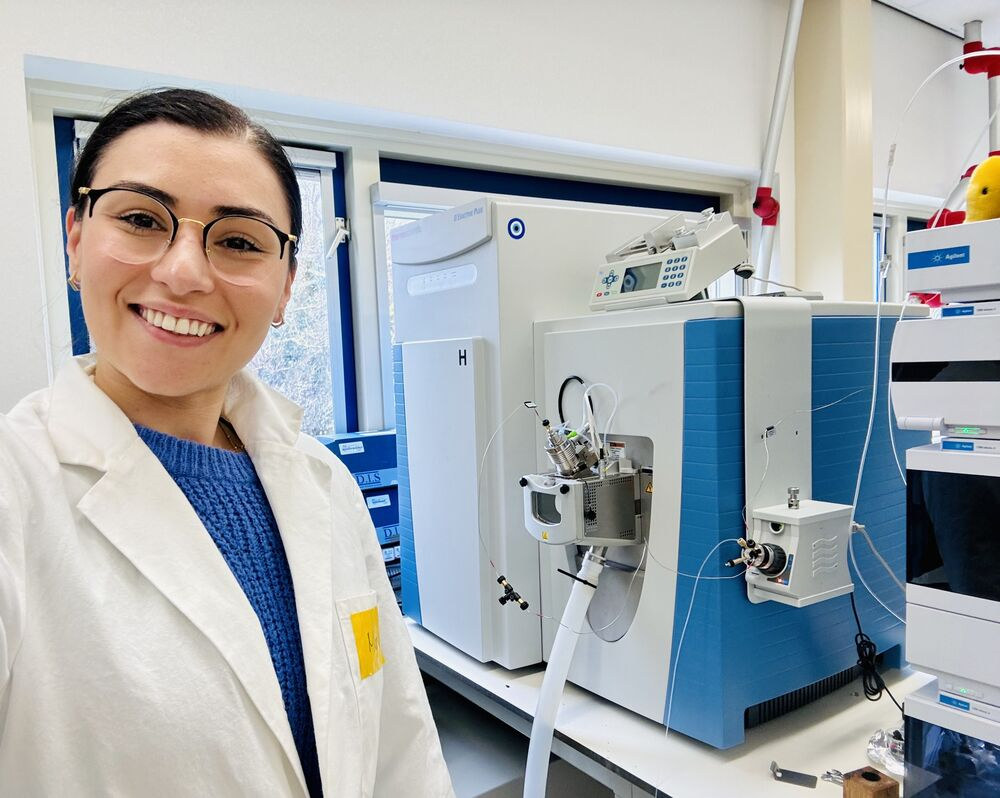
My PhD at NIOZ and Utrecht University in six chapters, from new mass spectrometry methods to applications in source attribution and metabolic tracing.
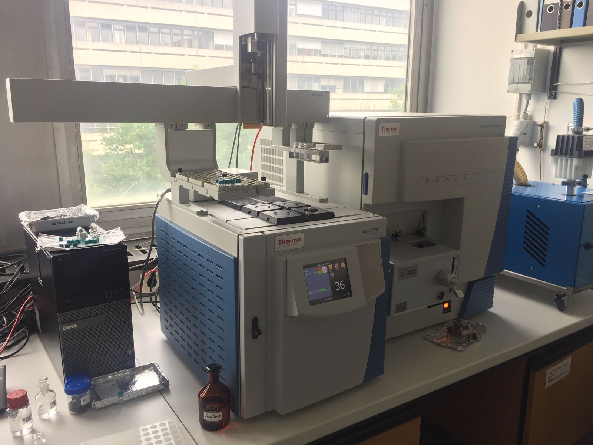
Isotope Ratio Analysis on Bioanalytical Mass Spectrometers
Introduction to the thesis and coauthored JASMS perspective on isotope analysis with Orbitrap and other bioanalytical mass spectrometers.
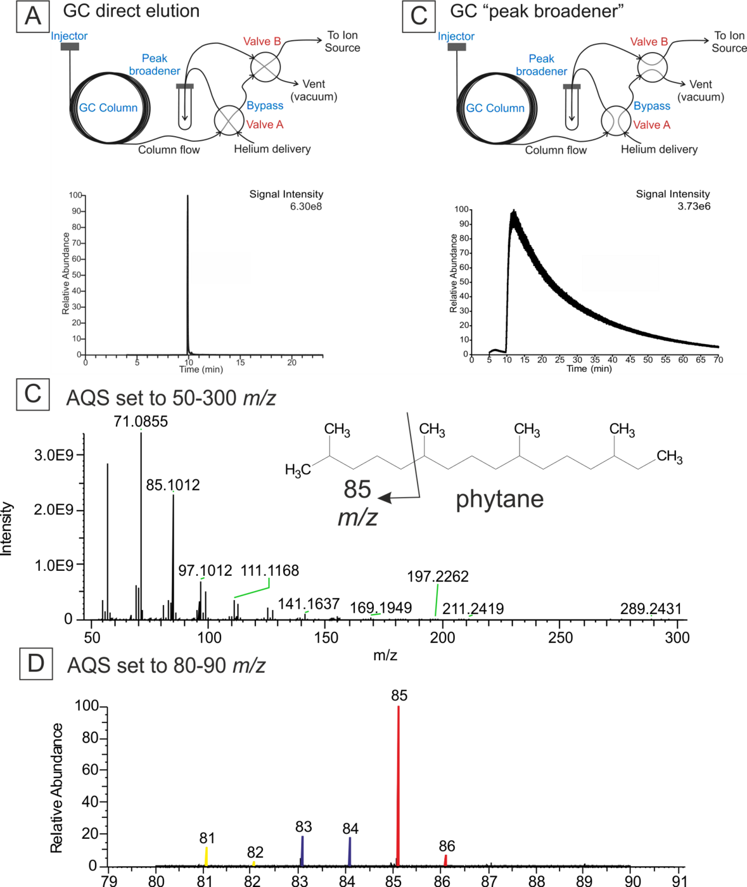
Carbon Isotopes in Fragment Ions of Phytane
Built a GC-Orbitrap workflow with a peak broadening reservoir to measure 13C in a phytane fragment from about 13 nmol of analyte.
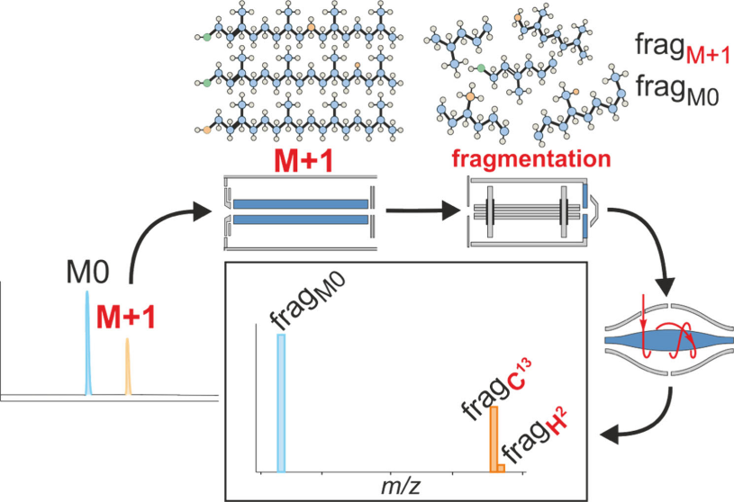
Isotope Fingerprinting of Phytol by LC-Orbitrap MS
Published method in ACS Omega. APCI LC-Orbitrap analysis of 26 phytol fragments with about 3‰ precision from under 1.2 µg of sample.
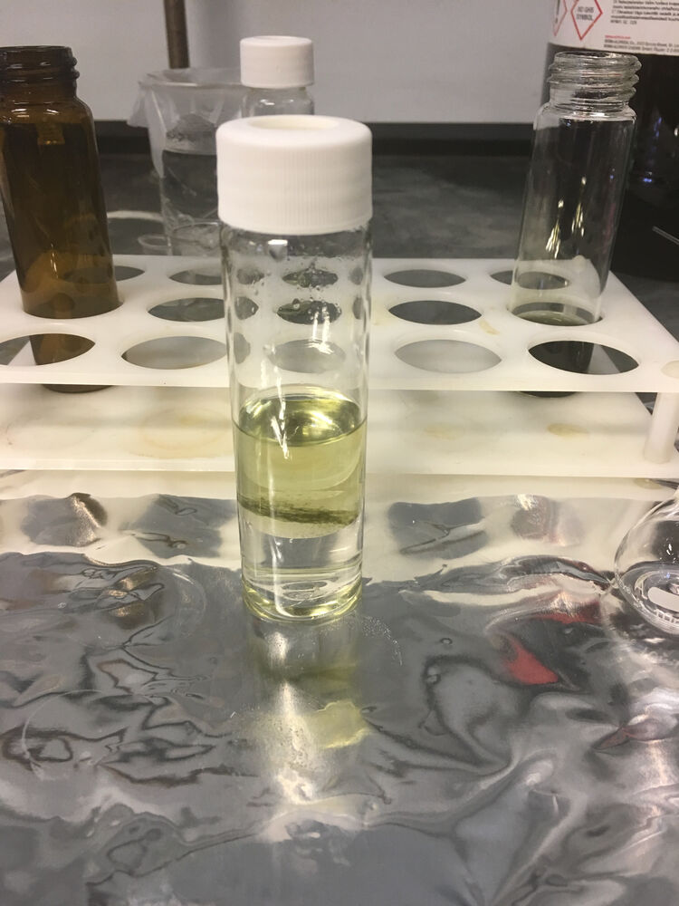
Fragment Isotope Fingerprints Distinguish Biological Sources of Phytol
Cultured and collected ten phototrophs, measured 26 phytol fragments each and used clustering and NMDS to separate sources by pathway.
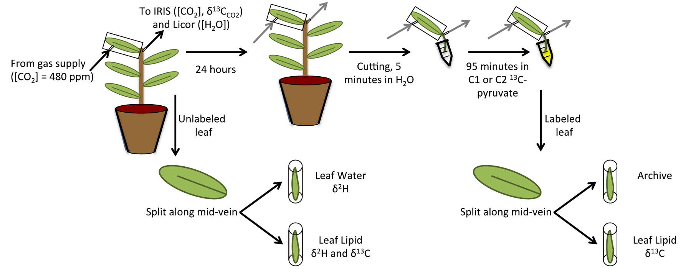
Tracing Carbon Routing into Isoprenoids Without Labels
Reanalysed plants from a 13C labelling study and showed that natural abundance fragment patterns record how carbon is routed into the MEP pathway.
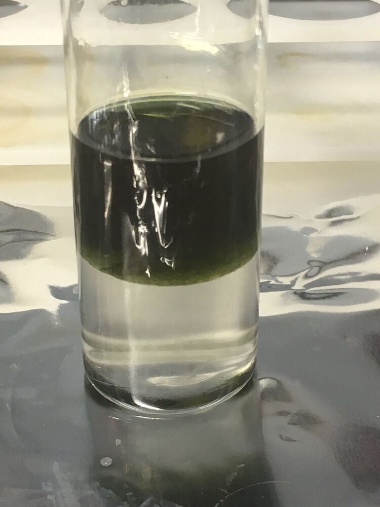
Exploring Doubly Substituted Isotopologues of Phytol
Measured 13C-13C isotopologues in phytol fragments and built theoretical models to separate real signals from contaminant and fractionation effects.
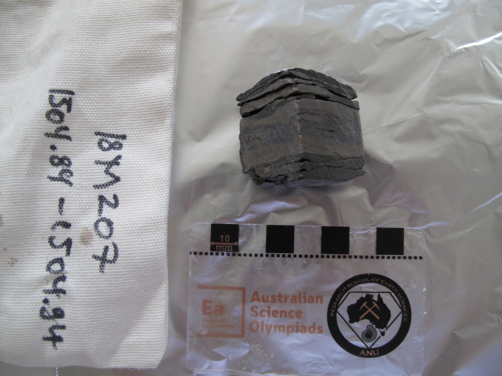
Eukaryotes in Tonian Ecosystems
Sampled 115 rocks from a 1.6 km drill core and combined ultraclean biomarker analysis, GC-MS/MS, XRF and isotopes to study early eukaryotic life.
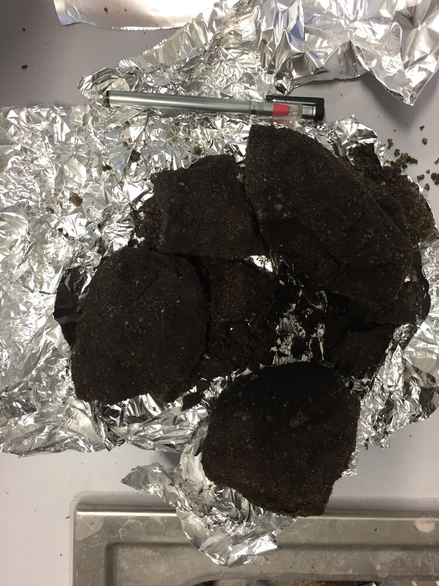
Biomarker Trends in Eutrophic Lake Seeburg
GC-MS biomarker analysis of sediment cores, dated with PAHs from a 1984 hotel fire, to reconstruct the history of eutrophication.
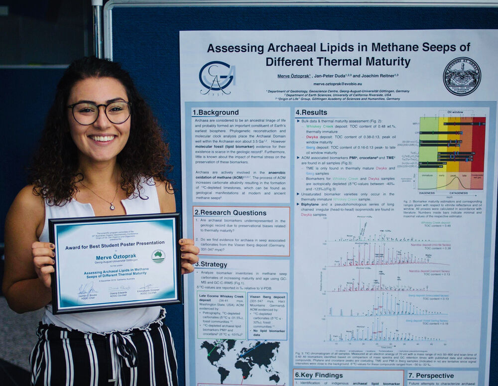
Archaeal Lipids in Fossil Methane Seeps
GC-MS and GC-C-IRMS of seep carbonates. Found archaeal biomarkers in the 331 to 347 million year old Iberg deposit.
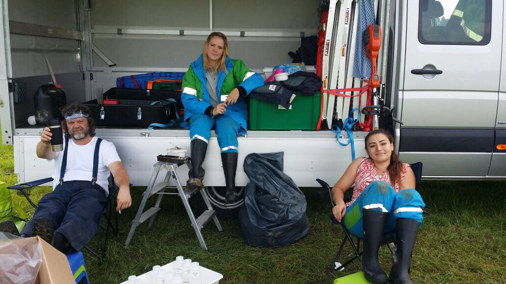
Ecotoxicology Bioassays for Crop Protection
Ran GLP compliant acute and chronic toxicity tests on soil organisms and built an automated image based scoring system.
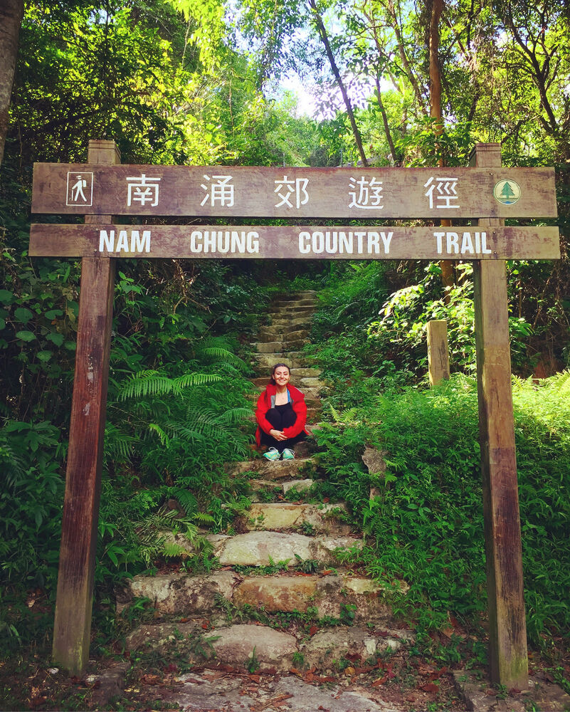
Earthworm Diversity and Climate Impact
Field surveys of earthworm species across Hong Kong and soil column experiments simulating future rainfall and drought.
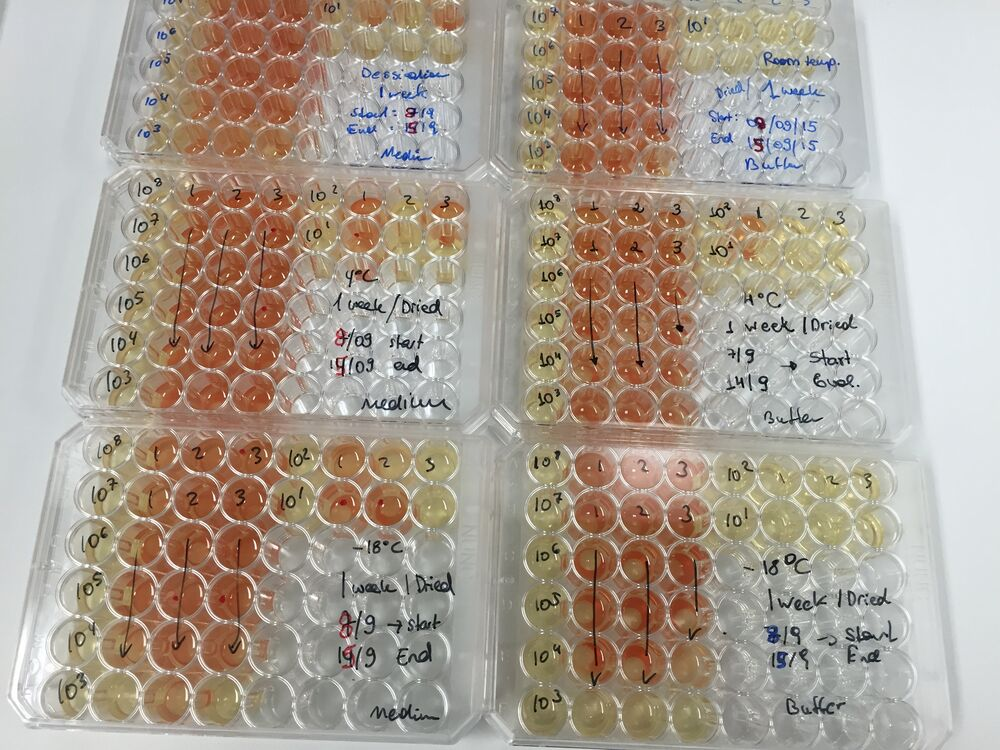
Microbial Survival Under Space Radiation
Exposed astrobiologically relevant microbes to UV and ionizing radiation and measured survival and DNA damage.